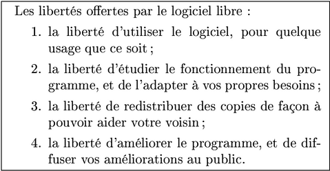
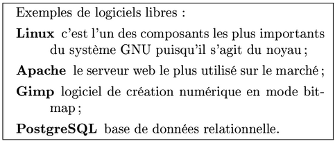
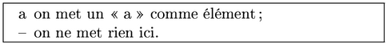
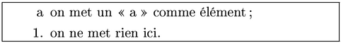
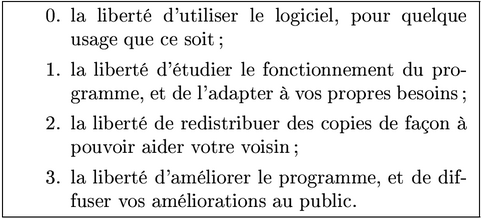
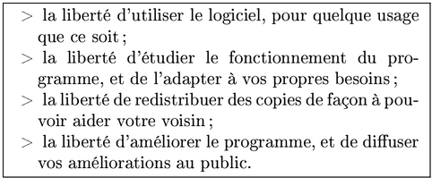
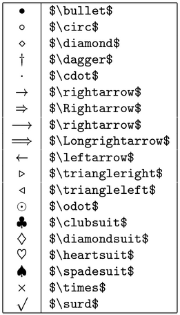
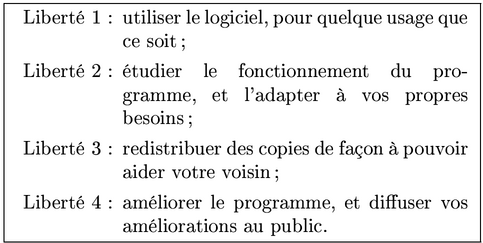
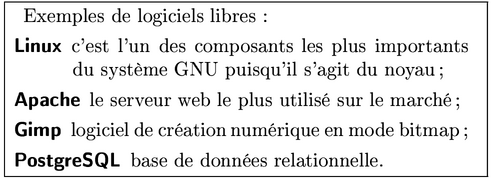

Cette série d'articles a pour but de démontrer que LaTeX est accessible au plus grand nombre, que LaTeX n'est pas élitiste et qu'avec un peu de bonne volonté et un coup de pouce, tout le monde peut s'en sortir. Ces articles assurent le coup de pouce aux débutants, à vous de fournir la volonté.
Nous voici au troisième épisode de cette saga qui a pour objet les
listes. Nous allons voir les moyens que nous donne LaTeX pour mettre en
forme des énumérations de texte.
Le mois dernier je vous avais promis que nous parlerions cette fois-ci des listes et des tableaux mais je me suis vite rendu compte que les deux sujets auraient du mal à cohabiter dans un nombre raisonnable de pages. Comme je n'ai voulu écourter les explications ni sur l'un ni sur l'autre, j'ai donc décidé d'écrire deux articles séparés. Les tableaux attendrons le mois prochain.
Les listes servent à structurer des énumérations de texte : cela peut être des objets (liste de courses), des ingrédients (recette de cuisine), des propriétés (fiche technique), ou tout autre inventaire de situations. LaTeX propose par défaut (nous verrons plus loin les possibilités d'extension) sous la forme d'environnements trois types de liste que nous allons découvrir sous la forme d'une liste :
\usepackage[french]{babel}
vos listes d'articles respecteront la typographie française ;
La syntaxe d'une liste est extrêmement simple. Il s'agit d'un
environnement à l'intérieur duquel les articles sont introduits par la
commande \item comme ceci pour une liste d'articles :
Les libertés offertes par le logiciel libre :
\begin{itemize}
\item la liberté d'utiliser le logiciel, pour quelque usage que ce soit ;
\item la liberté d'étudier le fonctionnement du programme, et de l'adapter à vos propres besoins ;
\item la liberté de redistribuer des copies de façon à pouvoir aider votre voisin ;
\item la liberté d'améliorer le programme, et de diffuser vos améliorations au public.
\end{itemize}
Nous voulons maintenant une liste numérotée, utilisons l'environnement enumerate à la place de itemize :
\begin{enumerate}
\item la liberté d'utiliser le logiciel, pour quelque usage que ce soit ;
...
\end{enumerate}

La syntaxe de la liste de description diffère un peu de ses consœurs. Vous pouvez donner à la commande \item
l'intitulé de l'article en paramètre. Ce n'est pas une obligation, si
vous ne précisez rien, c'est comme si vous passiez un paramètre vide.
Exemples de logiciels libres :
\begin{description}
\item[Linux] c'est l'un des composants les plus importants du système GNU puisqu'il s'agit du noyau ;
\item[Apache] le serveur web le plus utilisé sur le marché ;
\item[Gimp] logiciel de création numérique en mode bitmap ;
\item[PostgreSQL] base de données relationnelle.
\end{description}

A partir de celà vous pouvez imbriquer des listes à l'intérieur d'autres listes même de natures différentes. Les sous-listes seront décalées par rapport à leur liste parente. Nous verrons plus loin comment personnaliser l'élément introductif (numéro ou symbole) pour chacun des niveaux d'imbrication.
Vous remarquerez (n'hésitez pas à prendre une loupe) que l'espace entre l'élément introductif et le premier mot de l'article est rigoureusement identique à chaque article.
Certaines règles de la typographie française s'appliquent aux listes ; il convient de les respecter afin de produire des documents correctement structurés.
On peut classer les listes en deux catégories :
Les articles d'une liste simple commencent par une minuscule du fait qu'ils appartiennent à la même phrase et doivent se terminer par un point-virgule dans le cas d'une liste de premier niveau, et par une virgule dans le cas de sous-listes. Le dernier article se termine par un point. A noter que le point suivant le chiffre dans le cas d'une liste numérotée n'impose pas de majuscule sur le premier mot de l'article.
Pour les listes complexes, la construction est identique aux phrases : majuscule au début et point à la fin.
Ce que nous allons voir maintenant est un peu plus complexe que le reste, mais si vous avez suivi et compris les précédents articles ainsi que le début de celui-ci, il n'y a aucune raison de décrocher maintenant. Toutefois, vous pouvez vous arrêter là pour aujourd'hui, mettre en pratique ce que vous avez appris sur les listes et revenir à cette partie plus tard. Ne perdez pas de vue que les listes définies par défaut sont typographiquement correctes ; ce que nous allons voir maintenant vous permettra de faire des choses qui ne le seront pas forcément. C'est aussi ça la liberté offerte par LaTeX, faire ce que l'on veut.
Il existe de nombreuses façons de modifier les listes, mais nous ne verrons que les plus simples.
Vous avez constaté précédemment que la commande \item s'emploie seule dans le cas des listes itemize et enumerate et avec un paramètre passé entre crochets dans le cas de la description.
Pourtant il s'agit de la même commande dans les deux cas (en effet,
LaTeX ne permet pas que deux commandes différentes aient le même nom).
Les paramètres passés entre crochets sont optionnels, contrairement aux
paramètres passés entre accolades.
La commande \item s'utilise donc de la même façon quelle
que soit l'environnement de liste dans lequel elle se trouve. Par contre
son comportement dépend du type de liste. Dans le cas d'une liste itemize, si \item ne reçoit aucun paramètre, elle affiche un tiret moyen (document français). Pour une liste enumerate,
elle affiche par défaut un caractère de numérotation suivi d'un point
qui s'incrémente à chaque article. Et enfin, pour la liste description, elle affiche le paramètre en caractères gras ; s'il n'y a pas de paramètre, elle n'affiche rien.
Donc, vous l'aurez compris, on peut passer un paramètre à \item même si l'on ne fait pas de liste description. Observons ce que cela donne :
\begin{itemize}
\item[a] on met un << a >> comme élément ;
\item on ne met rien ici.
\end{itemize}

Et avec une énumération :
\begin{enumerate}
\item[a] on met un << a >> comme élément ;
\item on ne met rien ici.
\end{enumerate}

On constate plusieurs choses : tout d'abord le paramètre donné à \item
se retrouve tel quel à la place de l'élément introductif de l'article
concerné. On peut ainsi mettre en évidence un article au moyen d'une
flèche par exemple. Ensuite dans le cas de l'énumération, vous remarquez
que les articles dont un paramètre est passé à \item ne
sont pas pris en compte dans l'incrémentation (ici, le second article
porte le numéro 1, donc le premier n'est pas compté). A l'aide de cet
artifice nous pouvons reprendre l'exemple utilisé précédemment et
rétablir la numérotation des libertés offertes par le logiciel libre
telle que la voit Richard Stallman. Modifiez donc l'exemple de liste
énumérée pour obtenir ceci :

Toutefois, cette méthode peut s'apparenter à du bidouillage, surtout si vous voulez que vos modifications portent sur toute la liste. La solution n'est pas de modifier chacun des articles, c'est fastidieux et un oubli est si vite arrivé (et surtout, cela ressemble aux pratiques de certains traitements de texte).
La commande \item appelle en interne une autre commande
pour déterminer l'affichage de l'élément introductif. Cette commande
dépend du type de liste ainsi que du niveau d'imbrication, et c'est elle
que nous devons modifier.
Petite parenthèse technique, LaTeX offre la possibilité de créer de
nouvelles commandes mais nous n'en sommes pas encore là. Cela se fait au
travers de la commande \newcommand. Seulement, vous ne
pouvez créer une nouvelle commande portant le nom d'une commande
existante ; aussi, pour modifier une commande existante vous devez
utiliser \renewcommand à la place de \newcommand. Et c'est précisement ce que nous allons faire ici.
Pour une liste d'articles non numérotés, les commandes à modifier sont \labelitemi, \labelitemii, \labelitemiii et \labelitemiv pour les niveaux d'imbrication respectivement du premier au quatrième. Modifions, par exemple, les listes de premier niveau :
\begin{itemize}
\renewcommand{\labelitemi}{>}
\item la liberté d'utiliser le logiciel, pour quelque usage que ce soit ;
...
\end{itemize}

Il est possible d'utiliser des symboles tels que le disque, le cercle, le carré ou encore les flèches. En voici une liste non exhaustive mais probablement utile :

Exemple d'utilisation :
\begin{itemize}
\renewcommand{\labelitemi}{$\bullet$}
...
\end{itemize}
Toutes les commandes sont encadrées d'une paire de $. Il s'agit là de commandes uniquement disponibles en mode mathématique différent du mode normal que vous connaissez, le caractère $ permettant de passer de l'un à l'autre. Le mode mathématique de LaTeX offre des facilités pour la rédaction de textes comportants des équations, des symboles mathématiques en tout genre. Mais il n'est pas le propos de cet article et j'y reviendrai dans un prochain.
La méthode énoncée précédemment ne peut s'appliquer aux listes énumérées. En effet, l'élément introductif est dynamique (comprenez par là qu'il change à chaque article) alors que la méthode précédente le remplace par un élément fixe. La mécanique est ici un peu plus complexe car elle fait appel à la notion de « compteur » (en programmation, on appelle cela une variable).
Plutôt que de nous aventurer dans les ténébreuses contrées de la programmation LaTeX, nous allons plutôt utiliser le module d'extension enumerate ; attention, ne confondez pas avec l'environnement enumerate dont nous parlons depuis le début de cet article. Ici, il s'agit bien d'un ajout à la base de LaTeX, comme nous le faisons déjà avec babel, fontenc ou encore inputenc (cf. articles précédents ou la fin de celui-ci). Ajoutons donc cette ligne dans l'en-tête du source :
\usepackage{enumerate}
Ce module modifie l'utilisation de l'environnement enumerate, il lui rajoute un paramètre optionnel qui détermine le style de numérotation sous la forme d'un caractère clé :
Et cela s'utilise ainsi :
\begin{enumerate}[I]
\item premier point ;
\item deuxième point ;
\item troisième point.
\end{enumerate}
Et l'on peut même se permettre quelques raffinements du genre :
\begin{enumerate}[{Liberté} 1 :]
\item utiliser le logiciel, pour quelque usage que ce soit ;
\item étudier le fonctionnement du programme, et l'adapter à vos
propres besoins ;
\item redistribuer des copies de façon à pouvoir aider votre voisin ;
\item améliorer le programme, et diffuser vos améliorations au public.
\end{enumerate}

Si le texte entre crochets contient plusieurs caractères clés, c'est le dernier qui déterminera le style ; mais tous les caractères clés contenus entre crochets seront remplacés. Aussi, pour utiliser un caractère clé tel quel (comme le « i » dans notre exemple) il faut l'entourer d'accolades.
Notez que :
\begin{enumerate}[L{i}berté 1 :]
est équivalent, mais moins lisible, à :
\begin{enumerate}[{Liberté} 1 :]
mais pas à :
\begin{enumerate}[Liberté 1 :]
Les accolades n'ont aucune influence sur les caractères autre que A, a, I, i et 1. Vous pouvez les disposer à votre guise (si besoin est) pour une meilleure lisibilité de votre source.
Et pour finir nous allons changer le style de caractère de l'élément introductif ; c'est surtout intéressant pour les listes description. Commençons par un exemple :
\begin{description}
\renewcommand{\makelabel}[1]{\sffamily\textbf{#1}}
...
On y apprend que c'est la commande \makelabel qu'il faut
modifier. Cette commande prend un paramètre obligatoire comme l'atteste «
[1] ». Dans la redéfinition de la commande le paramètre est représenté
par « #1 ». Cela signifie que lorsque \makelabel sera
utilisé, #1 sera remplacé par le paramètre. Si vous n'avez pas tout
compris, ce n'est pas grave, cela ne vous empêchera pas d'utiliser ceci.
Cet exemple produit une liste descriptive dont les éléments introductifs sont en gras sans empattements (cf. article du mois dernier). Et voilà ce que l'on obtient :

Je tenais à apporter quelques précisions d'ordre typographique sur l'article du mois précédent, dans lequel notamment certains auront remarqué l'absence du souligné. Voici donc quelques réflexions sur l'usage du gras, de l'italique et du souligné.
Le souligné est un héritage de l'ère des machines à écrire à l'époque où elles n'étaient pas encore truffées d'électronique. Les caractères gras et italiques étant absents, on utilisait abondamment le souligné pour mettre du texte en évidence. C'est également le meilleur moyen en écriture manuscrite. Mais le gras et l'italique ont un usage différent l'un de l'autre.
Le gras accroche l'œil. Un mot en gras dans un paragraphe en romain (caractère normal) se remarquera sans même avoir à lire ledit paragraphe. On utilise généralement le gras avec parcimonie, pour mettre en évidence les titres de section, sous-section, ou encore pour les mots-clés d'un document que l'on consulte (dictionnaire, annuaire téléphonique). Mais pas dans un texte destiné à être lu linéairement du début à la fin (roman, article, rapport). Plus le caractère est gras, moins il est lisible, donc plus on est obligé d'augmenter la taille de la police (le corps).
L'italique est une écriture oblique, qui contrairement au penché, n'a pas le même dessin que le romain. L'italique est un moyen de mettre un mot en évidence discrètement. C'est à dire que vous ne remarquerez un mot en italique dans un paragraphe tout en romain, qu'au moment où vous le lirez. On utilisera donc l'italique pour faire remarquer au lecteur qu'il y a une différence sans attirer son œil. C'est le moyen de prédilection pour mettre du texte en évidence dans un document à lecture linéaire. On peut l'utiliser pour les mots étrangers, les noms d'œuvres ou simplement pour mettre un mot en emphase, souligner (au sens figuré) son caractère particulier. Comme le gras, l'italique n'est pas très lisible ; il vaut mieux ne pas l'utiliser pour tout un paragraphe, sinon, il perdrait sa propriété de mise en valeur.
Le souligné attire l'œil comme le gras, mais il coupe les jambages. Le jambage est la partie de la lettre qui descend en dessous de la ligne d'écriture ; c'est le cas de y, p, q, g, et j. Il est donc à proscrire.
N'oubliez pas que le caractère romain est le plus facile à lire ; il doit être utilisé par défaut, les autres styles ne devant être que des exceptions.
Pour une réflexion plus poussée je vous invite à consulter la Petite leçon de typographie de Jacques André concernant ce sujet. L'adresse est dans les liens.
\documentclass[a4paper,10pt]{article}
\usepackage[french]{babel}
\usepackage[T1]{fontenc}
\usepackage[latin1]{inputenc}
\title{Apprivoiser LaTeX - 3 - Listes}
\author{Dimitri ROBERT}
\begin{document}
\maketitle
\end{document}
Ce que j'appelle source (sans doute à cause de mes habitudes de programmeur) est le fichier qui va contenir votre texte mais aussi les commandes de mises en forme. Le document est le résultat de la compilation du source. Votre texte doit être inséré à l'intérieur de l'environnement document.
Comment utiliser votre source (commandes à taper dans une console texte) :
Le mois prochain nous parlerons effectivement des tableaux ; cette fois, c'est sûr.